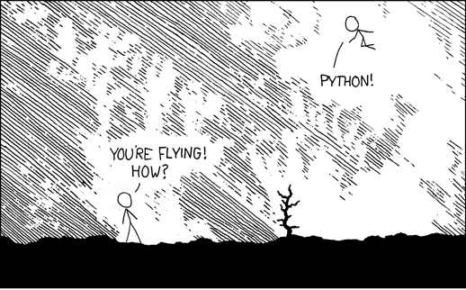

Homemade debugger
Artem Malyshev
@proofit404
Proud member of the
Django Channels
maintenance team
Wow, Python is so cool!
I will write my next project in Python!
Lol, you are using print statements for debugging?!

if only I can write debugger myself...
Chapter 1
Inside a Python interpreter
Source code
def foo(a, b):
return a + b
if __name__ == '__main__':
print(foo(1, 2))
Bytecode
$ python -m dis simple.py
0 LOAD_CONST (<code object foo>)
...
16 LOAD_NAME (print)
18 LOAD_NAME (foo)
20 LOAD_CONST (1)
22 LOAD_CONST (2)
24 CALL_FUNCTION
26 CALL_FUNCTION
Frame evaluation
_PyEval_EvalFrameDefault(PyFrameObject *f, int throwflag) {
switch (opcode) {
TARGET(CALL_FUNCTION) {
PyObject **sp, *res;
res = call_function(&sp, oparg, NULL);
stack_pointer = sp;
PUSH(res);
}
}
}
Trace function
_PyEval_EvalFrameDefault(PyFrameObject *f, int throwflag) {
switch (opcode) {
TARGET(CALL_FUNCTION) {
PyObject **sp, *res;
res = call_function(&sp, oparg, NULL);
call_trace(tracefunc, frame);
JUMPTO(frame->f_lasti);
PUSH(res);
}
}
Chapter 2
Pdb implementation
Settrace event table
| 'call' | Before a function is executed. |
| 'line' | Before a line is executed. |
| 'return' | Before a function returns. |
| 'exception' | After an exception occurs. |
Setup debugger
def foo(a, b):
return a + b
if __name__ == '__main__':
import mydbg.set_trace()
print(foo(1, 2))
Naive usage
import sys $ python simple.py
call
def set_trace(): ['f_back', 'f_code', 'f_locals']
sys.settrace(dispatch)
def dispatch(frame, event, arg):
print(event)
print(dir(frame))
Nested calls
import sys $ python simple.py
call
def set_trace(): ['f_back', 'f_code', 'f_locals']
sys.settrace(dispatch) line
['f_back', 'f_code', 'f_locals']
def dispatch(frame, event, arg):
print(event)
print(dir(frame))
return dispatch
Print code lines
import sys $ python simple.py
import linecache def foo(a, b):
return a + b
def dispatch(frame, event, arg): return a + b
line = linecache.getline(
frame.f_code.co_filename,
frame.f_lineno,
)
print(line)
return dispatch
Chapter 3
Threads and Multiprocessing
Chapter 4
Coroutines and asyncio
What if you even don't know where to start
Chapter 6
Many years after...
A lot of cool tools were developed
ipdb, pdb++, winpdb
BeeWare bugjar
JetBrains PyCharm debugger
GDB python extensions